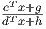

MATP6640/ISYE6770 Linear and Conic Optimization, Homework 1.
Solutions
Due: Thursday, January 23, 2020.
10% penalty for each day late.
has an optimal value in the range [α,β]. In addition, assume that any x satisfying Ax ≥ b also satisfies dT x + h > 0. Develop a procedure that uses linear programming as a subroutine to find the optimal value of the fractional linear program, to within any desired tolerance. (Hint: Consider the problem of determining whether the optimal value is above or below a given threshold τ.)
Solution:
We have an algorithm:
This binary search algorithm works, because the fractional LP has optimal value strictly larger than z if and only if  > z for all feasible x, which is equivalent to stating that cT x + g > z(dT x + h) for all feasible x since dT x + h > 0, which is equivalent to stating that v(z) > 0.
Note that it is not enough to just try minimizing cT x or maximizing dT x, as shown by the following example which has optimal solution x = (2,2):
A fractional LP may have a finite optimal value, yet not achieve that value, as in the next example in just one variable:
Note also that we could solve the problem using a change of variables. In particular, define
and solve the problem
The optimal value of this problem is equal to the optimal value of the original problem. If the optimal solution (z*,t*) to this new problem has t* > 0 then we can recover an optimal solution to the original problem by setting x = z*∕t*. If the optimal solution has t* = 0 then there is no optimal solution to the original problem; the optimal value is only approached asymptotically.
One final observation about this problem: the objective function is monotonic on straight lines, so consequently if there is an optimal solution then there is a BFS that is optimal.
The point x = (1,4,0,0,0)T is a basic feasible solution for this problem. Find all the bases corresponding to this bfs.
Solution:
Any basis consists of three columns. This set of three columns must include the first two columns since x1 > 0 and x2 > 0. The first three columns are linearly dependent so they don’t give a basis. The other two choices are valid, namely the sets of columns {1,2,4} and {1,2,5}.
Here, A ∈ ℝm×n, the dimensions of x, c, and b are defined appropriately, and 1 ≤ m ≤ n = 3. The first row of the system Ax = b is the constraint x1 + 2x2 + 6x3 = 12. Let K be the feasible region of (P).
Solution:
Solution:
Assume ≠0 is an extreme point of the cone, which we designate as K. Then x1 := 0.5 and x2 := 1.5 are two distinct points in K, since it is a cone. We have = 0.5x1 + 0.5x2 so is not an extreme point. So the only possible extreme point is the origin.
Any subspace is a convex cone without an extreme point. So for example we can take ℝn for any finite positive n.
| John Mitchell |
| Amos Eaton 325 |
| x6915. |
| mitchj at rpi dot edu |
| Office hours: Monday 2–4pm; Wednesday 11am–1pm. |